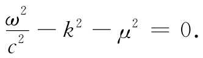

我们愿意对那一部分非电磁性质的核（粒）子质量进一步做某些评述。这另一大部分质量究竟从哪里来的呢？除了电动力以外还有别的力——像核力——它们也有本身的场的理论，尽管没有人知道现行的理论是否正确。这些理论也预言对核粒子提供与电磁质量相似的质量项的场能，我们可以把它称为“π介子场质量”。它大概会十分巨大，因为那些力非常强，而这可能就是重粒子的质量起源。但有关介子场的理论目前还处于最初步的状态。即使利用发展得最完善的电磁理论，我们仍然发现在解释电子质量时难以获得成功。至于对介子理论，我们就像击球手在棒球场上三击不中而退下场的情况。
由于同电动力学存在着有趣联系，我们将花一点时间来略述介子理论。在电动力学中，场可以用满足下列方程的一个四维矢量来描述：
□2 Aμ =源.
现在我们已经知道，一部分场可以被辐射出去，因而可以离开源而存在。这部分场就是光的光子，而它们是由一个无源的微分方程描述的：
□2 Aμ =0.
人们曾经议论说，核力场也应有它自己的“光子”——它们大概会是π介子——而且它们应该由一个相似的微分方程来描述（由于人类脑子的弱点，我们不能想出某些真正新的东西，因而才通过与已知的东西的类比来进行论证）。因此，介子方程式也许就是
□2 ϕ=0，
其中ϕ可能是一个不同的四维矢量或也许是一个标量。结果证明π介子没有偏振，所以ϕ应为标量。如果采用这一简单方程□2 ϕ=0，则介子场应该随着与源间的距离按1/r2 变化，正如电场那样。可是我们知道，核力具有短得多的作用距离，因而该简单方程式就不适用。有一种办法能够使事情改变而又不会破坏相对论不变性：我们可以对达朗贝尔算符加上或减去一个常数乘以ϕ。因此汤川秀树就曾建议，核力场的自由量子或许遵循方程：
□2 ϕ-μ2 ϕ=0， （28.17）
式中μ2 是一常数——也就是一个不变的标量（由于□2 是四维空时中的一个标量微分算符，所以如果我们对之加上另一个标量，它的不变性仍然成立）。
让我们来看看，当情况不随时间变化时式（28.17）会给出一个怎么样的核力。我们希望有满足下列方程的围绕着处于原点的点源的球对称解。
▽2 ϕ-μ2 ϕ=0.
如果ϕ仅取决于r，则我们知道
若把（rϕ）想象成因变数量，则这便是我们曾经多次见过的一个方程。它的解是
ϕ=Ke±μr /r. （28.18）
这一函数称为汤川势 。对于吸引力来说，K为负数，其大小必须调整到与实验上所观测到的力的强度相符。
核力的汤川势按指数因子衰减得比1/r更快。对于超过1/μ的那些距离，这个势——从而这个力——降落到零要比1/r快得多，如图28-6所示。核力“范围”要比静电力“范围”小得多。从实验上发现，核力并不会超出约10-13 cm，因而μ≈1015 m-1 。
图28-6 汤川势e-μr /r，与库仑势1/r相比较
最后，让我们看看方程式（28.17）的自由波解。如果将
代入式（28.17）中，便得

将频率与能量、波数与动量联系起来，像在第1卷第34章末尾我们曾经做过的那样，便可得到
上式表明，汤川“光子”具有等于μћ/c的质量。如果我们对μ采用核力的观测范围的估计值1015 m-1 ，结果质量为3×10-25 g或170MеV，这近似等于所观测到的π介子质量。因此，根据与电动力学所做的类比，我们会说π介子就是核力场中的“光子”。但现在我们已把电动力学的那些概念推广到它们可能实际上并不适用的领域中去了——我们已超过了电动力学范围而涉及到了核力的问题。
[1] 我们是在采用这么一种记法： ，等等。